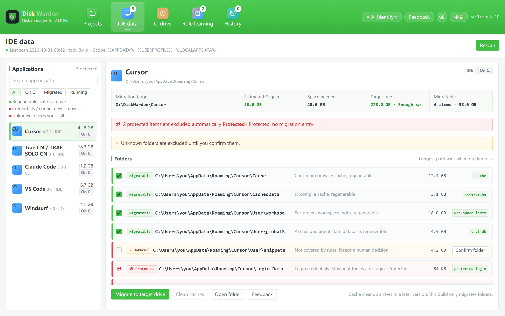

200 GB+
Disk use reported from a runaway debug-logging loop in Claude Code, where individual debug files passed 20 GB.
Source: GitHub issue #16093
Storage manager for AI IDEs
Disk Warden finds the data folders behind Cursor, Trae, Claude Code and other AI tools, moves the reproducible bulk to another drive, and leaves the original paths intact. Everything keeps working from the same path; credentials and settings never move.
Current build 0.9.0-beta.10, unsigned, published on GitHub Releases. SmartScreen shows one prompt on first launch.
AI IDEs keep a local database, workspace indexes, logs and session history. Those files are not your source code, and most can be rebuilt — but they sit in the same folder tree as the login tokens and settings that cannot move. Cleaning by hand is how people end up logged out, or worse, with a half-deleted profile.
200 GB+
Disk use reported from a runaway debug-logging loop in Claude Code, where individual debug files passed 20 GB.
Source: GitHub issue #16093
44,635
Files accumulated in ~/.claude/debug in roughly four weeks, in a reproduction filed by another user.
Source: GitHub issue #28235
5.86 GB
A single Cursor local database, reported at 5,860,462,592 bytes in the Cursor community forum — one key in it around 3.1 MB.
Source: Cursor forum thread
These are public bug reports and community threads, linked per item — not measurements we took. Your folder sizes will differ, and a single tool can hold several of these directories at once.
Three steps, and nothing irreversible happens before a verified copy exists.
Scan the known data roots of the AI IDEs and CLIs you use — Cursor, Trae, Claude Code, VS Code, Windsurf and more. Every folder is classified green (movable), yellow (unknown, ask first) or red (never touch).
Before anything is written, see which folders will move, how much C: will free, and how much the target drive needs. Anything you have not confirmed stays exactly where it is.
Copy, verify, then replace the original folder with a directory junction. The tool keeps reading the same path and new data lands on the target drive. No reinstall, no config edits.
Three defaults that keep the app out of the way.
The welcome screen offers GitHub sign-in through the OAuth Device Flow: the app opens GitHub in your browser and you type the eight-character code shown on screen. No client secret is involved. Skipping it is a first-class choice: scanning, migrating and rollback all run locally and never need an account.
The GitHub Star prompt is a translucent card you can dismiss with “Maybe later”, and Settings can turn it off for good. It never blocks a task, and no feature depends on it. Starring only ever writes to GitHub: the sign-in asks for the read:user scope and nothing else — no repo access, no Gitee sign-in.
Nothing leaves the machine unless you turn AI analysis on. The API key is encrypted on this machine with Windows DPAPI, readable only by your own user account — never uploaded, never written into a config file.
The four checks below run on every migration, not just the first one.
Login Data, Local State, settings and memory files are classified red: never copied, moved or linked. What moves is cache, indexes, logs and session history.
Every move lists the folders, the space freed and the space needed. Unknown folders need a per-item confirmation before they can enter a plan.
The copy is checked by relative-path set, file count and total bytes. If anything differs, the source stays intact and no link is created.
Move the data back to C: at any time. The copy on the target drive is cleaned only after the restored copy has verified.
If a migration is interrupted, the next start detects the unfinished task and either completes recovery or stops and asks for a decision — it does not guess. No administrator rights are requested, and scan, migration and rollback make no network requests.
Every archive on GitHub Releases ships with a matching .sha256 file — check it with Get-FileHash -Algorithm SHA256 before you run anything. The repository tracks no compiled binaries: everything you execute is built from a tagged commit by CI, and tools/repo_safety_check.py fails the build if a secret or a download-and-run script ever lands in a tracked file.
One screen per tool: what is movable, what is protected, and what a migration will free.

Windows is the verified platform; the macOS build is a developer preview. Both are published as zips on GitHub Releases — no installer, no toolchain, nothing to compile.
0.9.0-beta.10 · unsigned · zip archive, no installer
Both builds are unsigned, so Windows shows one SmartScreen prompt (More info → Run anyway) and macOS asks for Gatekeeper approval once. Neither warning is a virus alert, and neither asks you to switch off a system protection.
Release notes and older buildsSource-available under the PolyForm Noncommercial License 1.0.0. Free for individuals; commercial use needs a separate license.
Any commercial use — including internal use by a company — requires a separate commercial license. Write to 44062290+QuotaFuse-ai@users.noreply.github.com.
Read the full license text Source-available, not an OSI-approved open-source license.
No. Chats, caches, logs and indexes are movable; login data, settings and memory are classified red and are never touched. Anything that moves is data the tool can rebuild.
Yes. The original path becomes a directory junction that points at the new location, so the app opens exactly the path it opened before. New data is written to the target drive, and no configuration is edited.
Select the migrated tool and choose “Move back to C:”. The data is copied to the original path, verified, and only then is the copy on the target drive removed. Rollback stays available for as long as the migrated data exists.
Yes. Files that are open cannot be copied reliably. If the tool is running, the migration is blocked rather than forced — Disk Warden will not kill the process for you.
Cursor, Trae (CN and international builds), Claude Code, VS Code, Windsurf and other known AI IDEs and CLIs. Folders the rules do not recognize are shown as yellow and need your explicit confirmation before they can move.
An unsigned .app for macOS 11+ on Apple Silicon is published as a developer preview: DiskWarden-0.9.0-beta.10-macos-arm64.zip. It uses symlinks instead of junctions, is built and smoke-tested by CI, and nobody on the team has run it on real hardware yet. One gap is known before you try it: automatic directory discovery is still Windows-only, so the scan finds nothing on a Mac. Intel builds are not produced.
No. The welcome screen offers GitHub sign-in through the OAuth Device Flow, and skipping it is a first-class choice. Scanning, migrating and rollback run entirely on this machine and never need an account; no local feature is gated behind sign-in.
No — not by default. Scan, migration and rollback make no network requests. AI analysis is off until you enable it; if you do, folder metadata (paths, sizes and rule reasons) is sent to the model endpoint you configure. The API key is encrypted with Windows DPAPI, stays on this machine and is never uploaded.
Disk Warden is developed in the open. Reports about a folder that should — or should not — be moved are especially useful.